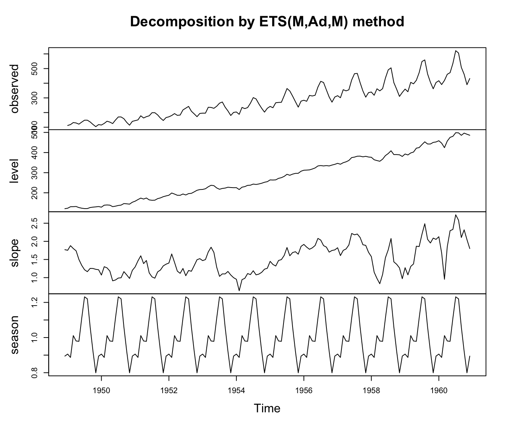
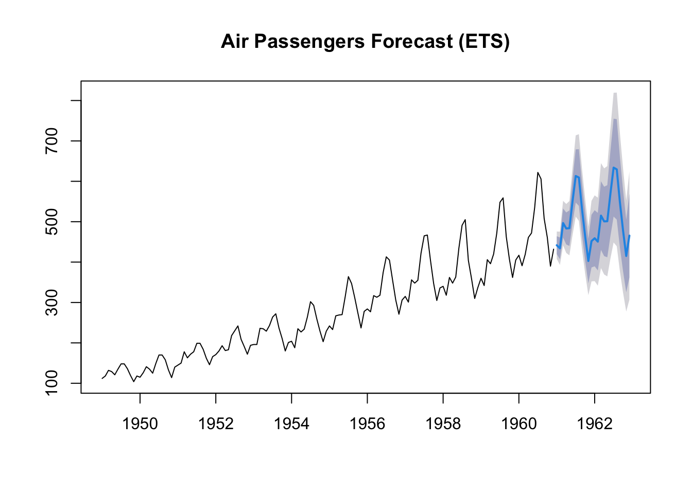
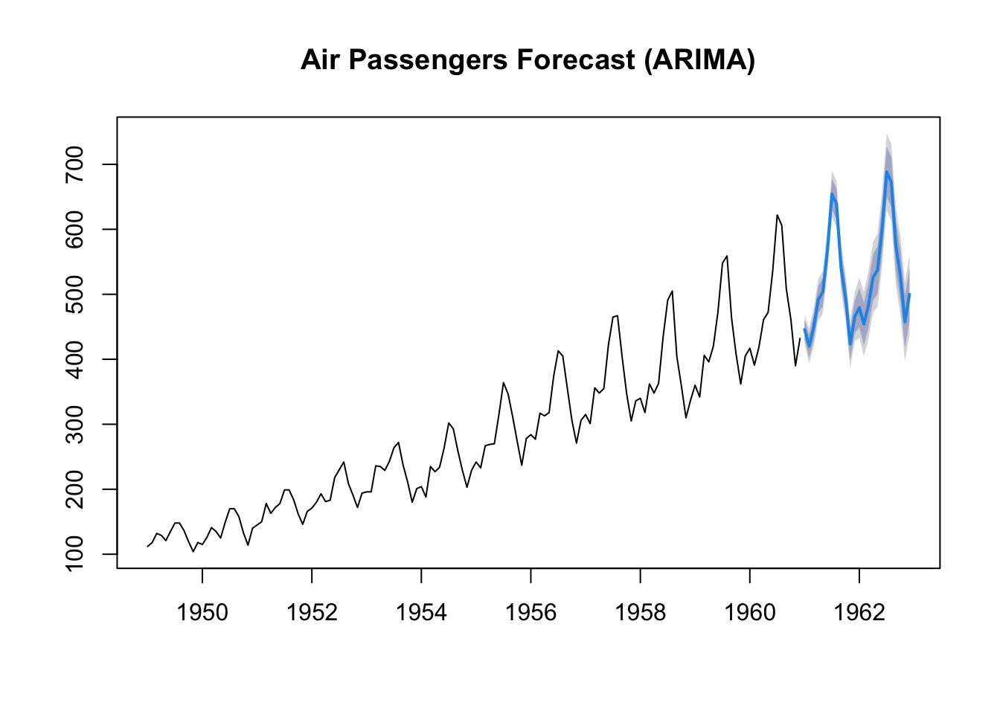
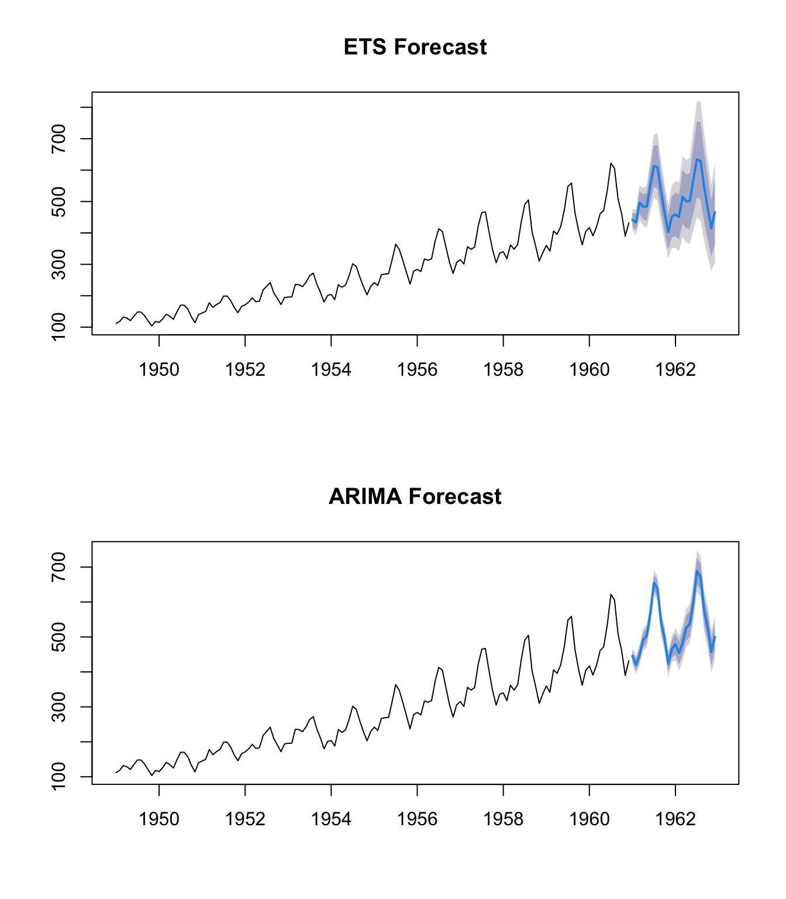
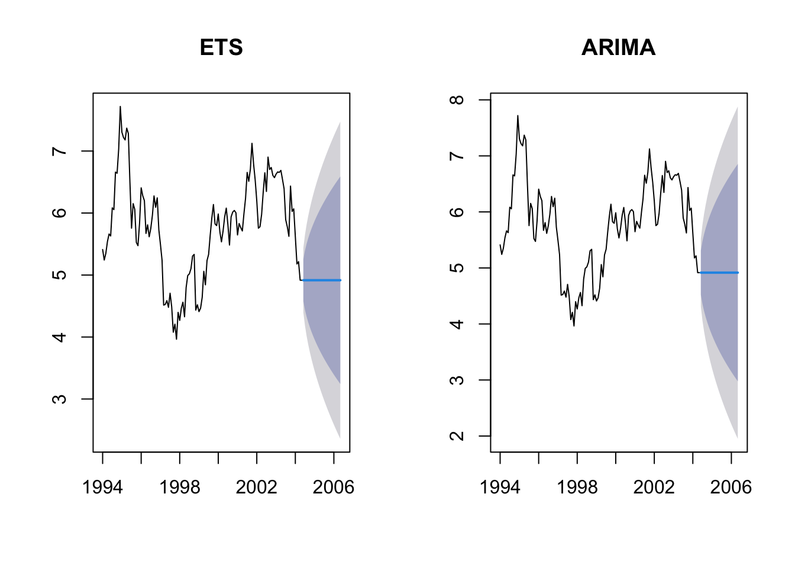
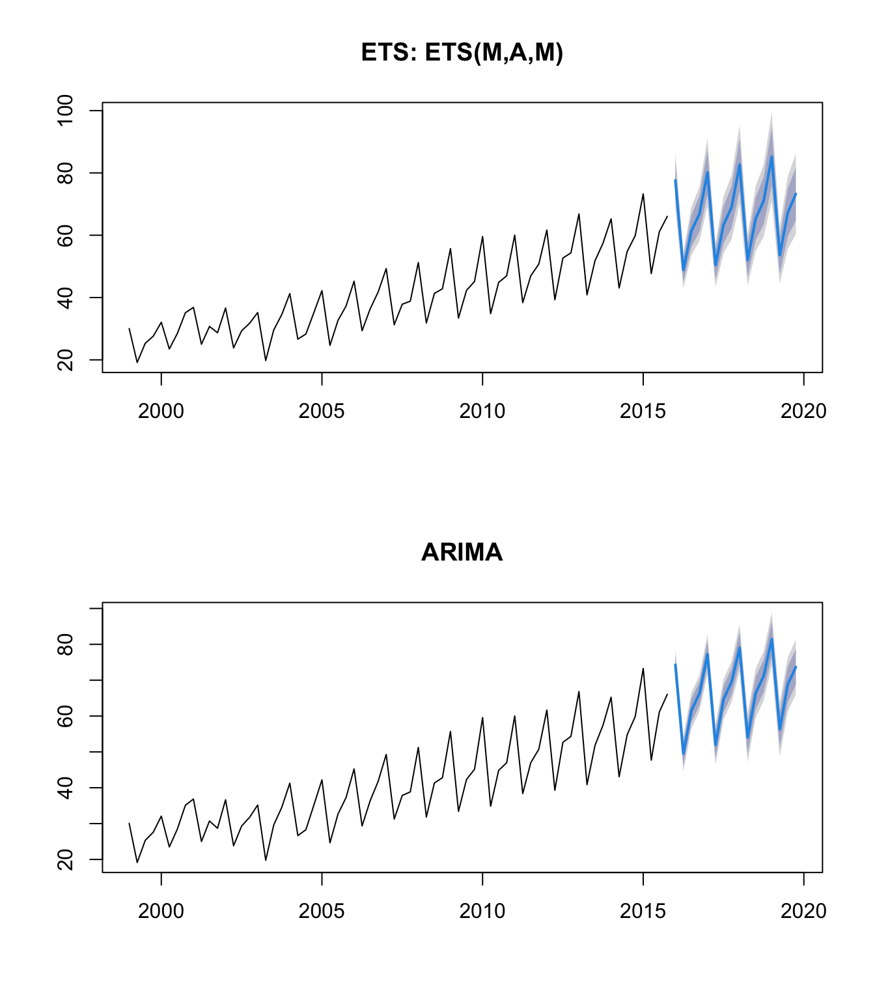
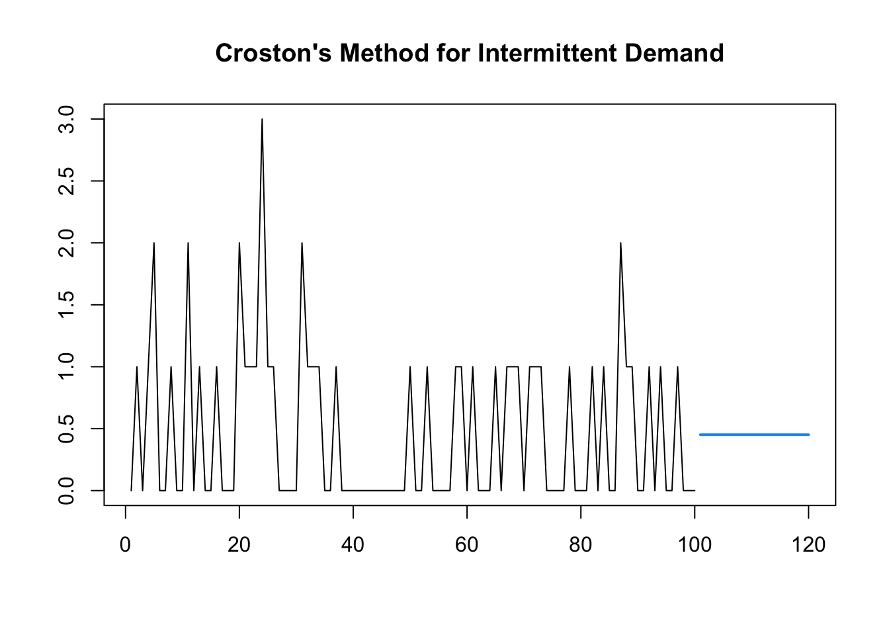
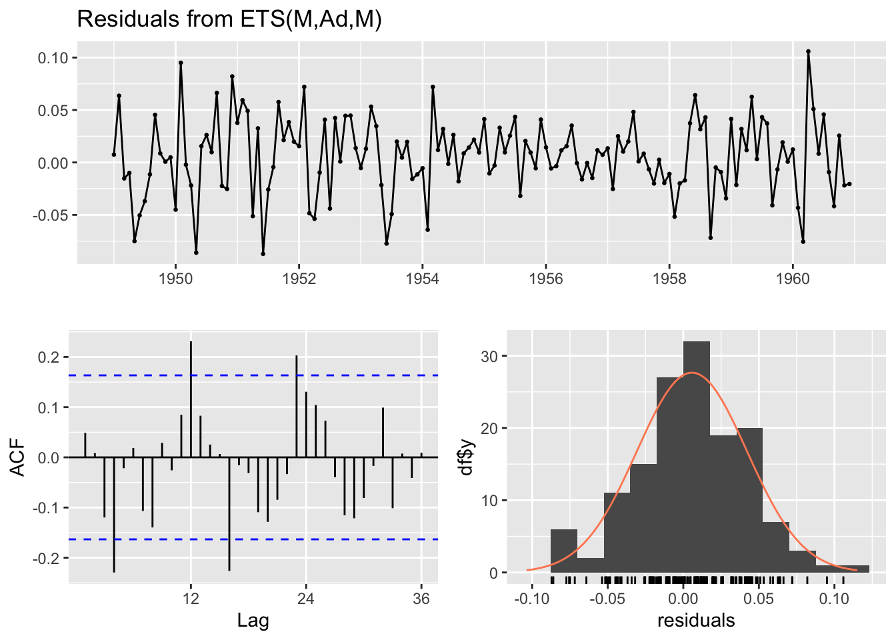

| ETS_Notation | Traditional_Name | Use_Case |
|---|---|---|
| ETS(A,N,N) | Simple Exponential Smoothing (SES) | No trend, no seasonality |
| ETS(A,A,N) | Holt’s Linear Method | Linear trend, no seasonality |
| ETS(A,Ad,N) | Damped Trend Method | Trend that levels off |
| ETS(A,A,A) | Additive Holt-Winters | Linear trend + additive seasons |
| ETS(A,A,M) | Multiplicative Holt-Winters | Linear trend + multiplicative seasons |
| ETS(M,A,M) | Holt-Winters with Multiplicative Errors | When variance increases with level |
Automatic Time Series Forecasting: A Deep Dive into Hyndman & Khandakar (2008)
1. Introduction and Motivation
1.1 Why Automatic Forecasting?
The paper by Hyndman & Khandakar (2008), published in the Journal of Statistical Software, addresses a practical problem in business forecasting:
“It is common to have over one thousand product lines that need forecasting at least monthly.”
Key challenges:
- Manual model selection is infeasible for thousands of series
- Many practitioners lack expertise in time series modeling
- Need for robust algorithms that work without user intervention
1.2 Paper Impact
This paper has been cited over 5,000 times on Google Scholar, making it one of the most influential papers in applied time series analysis.
A Word of Caution
As noted in critical reviews, many inexperienced users apply auto.arima() blindly and call it the “best” model simply because an algorithm selected it. Automatic ≠ Optimal in all cases.
2. Exponential Smoothing Methods
2.1 The ETS Framework
Exponential smoothing methods can be classified using the ETS(Error, Trend, Seasonal) notation:
| Component | Options |
|---|---|
| Error | Additive (A), Multiplicative (M) |
| Trend | None (N), Additive (A), Additive Damped (Ad), Multiplicative (M), Multiplicative Damped (Md) |
| Seasonal | None (N), Additive (A), Multiplicative (M) |
This gives us 30 possible models (though some are rarely used).
2.2 Common Model Examples
2.3 Holt-Winters Additive Method: A Detailed Example
The Holt-Winters additive method ETS(A,A,A) uses these equations:
Level: \[\ell_t = \alpha(y_t - s_{t-m}) + (1-\alpha)(\ell_{t-1} + b_{t-1})\]
Trend: \[b_t = \beta^*(\ell_t - \ell_{t-1}) + (1-\beta^*)b_{t-1}\]
Seasonal: \[s_t = \gamma(y_t - \ell_{t-1} - b_{t-1}) + (1-\gamma)s_{t-m}\]
Forecast: \[\hat{y}_{t+h|t} = \ell_t + b_t h + s_{t-m+h_m^+}\]
where \(m\) is the seasonal period and \(h_m^+ = [(h-1) \mod m] + 1\).
2.4 State Space Representation
From Ad-hoc to Rigorous
Exponential smoothing may seem ad-hoc until embedded in a state space model (SSM). The SSM framework provides:
- A probabilistic foundation
- Prediction intervals
- Likelihood-based estimation
- Model selection via information criteria
The general innovations state space model:
\[y_t = w(\mathbf{x}_{t-1}) + r(\mathbf{x}_{t-1})\varepsilon_t\] \[\mathbf{x}_t = f(\mathbf{x}_{t-1}) + g(\mathbf{x}_{t-1})\varepsilon_t\]
where \(\{\varepsilon_t\}\) is Gaussian white noise with mean zero and variance \(\sigma^2\).
2.5 Technical Note: The POMP Assumption
A Technical Critique
The innovations state space model violates the usual POMP (Partially Observed Markov Process) assumption that \(Y_n\) is conditionally independent of all other variables given \(X_n\).
Why? The same error term \(\varepsilon_t\) appears in both the observation and state equations.
Standard POMP:
State noise η_t ──→ X_t ──→ Y_t ←── Observation noise ε_t
(Two independent noise sources)Innovations State Space:
Single ε_t ──┬──→ X_t (state update)
└──→ Y_t (observation)
(One shared noise source)This is not an error—it’s a different model class that simplifies likelihood computation.
2.6 R Implementation: ets() Function
library(forecast)
# Load example data: Monthly airline passengers
data("AirPassengers")
ap <- AirPassengers
# Automatic model selection
ets_fit <- ets(ap)
print(ets_fit)ETS(M,Ad,M)
Call:
ets(y = ap)
Smoothing parameters:
alpha = 0.7096
beta = 0.0204
gamma = 1e-04
phi = 0.98
Initial states:
l = 120.9939
b = 1.7705
s = 0.8944 0.7993 0.9217 1.0592 1.2203 1.2318
1.1105 0.9786 0.9804 1.011 0.8869 0.9059
sigma: 0.0392
AIC AICc BIC
1395.166 1400.638 1448.623 # Plot the decomposition
plot(ets_fit)
# Generate forecasts
ets_forecast <- forecast(ets_fit, h = 24)
plot(ets_forecast, main = "Air Passengers Forecast (ETS)")
2.7 Initial Value Estimation
Key Innovation
Most implementations use ad-hoc heuristics for initial values. The forecast package estimates initial values \(\mathbf{x}_0\) along with parameters \(\theta\) via maximum likelihood:
\[L^*(\theta, \mathbf{x}_0) = n \log\left(\sum_{t=1}^n \varepsilon_t^2\right) + 2\sum_{t=1}^n \log|r(\mathbf{x}_{t-1})|\]
This often produces substantially better forecasts.
# Extract estimated parameters
cat("Smoothing parameters:\n")Smoothing parameters:cat(" alpha =", ets_fit$par["alpha"], "\n") alpha = 0.7095519 cat(" beta =", ets_fit$par["beta"], "\n") beta = 0.02040892 cat(" gamma =", ets_fit$par["gamma"], "\n") gamma = 0.0001004683 cat("\nInitial states:\n")
Initial states:cat(" l0 =", ets_fit$initstate[1], "\n") l0 = 120.9939 cat(" b0 =", ets_fit$initstate[2], "\n") b0 = 1.77054 3. ARIMA Models
3.1 Model Specification
A seasonal ARIMA\((p,d,q)(P,D,Q)_m\) model:
\[\Phi(B^m)\phi(B)(1-B^m)^D(1-B)^d y_t = c + \Theta(B^m)\theta(B)\varepsilon_t\]
where:
- \(p, q\): non-seasonal AR and MA orders
- \(P, Q\): seasonal AR and MA orders
- \(d, D\): non-seasonal and seasonal differencing
- \(m\): seasonal period (e.g., 12 for monthly data)
3.2 The Challenge of Model Selection
With \(p, q \in \{0,1,2,3,4,5\}\) and \(P, Q \in \{0,1,2\}\), we have potentially hundreds of models to consider.
3.3 Determining Differencing Orders
Unit Root Tests vs. Diffuse Priors
The paper prefers unit root tests over diffuse priors because:
“Over-differencing harms forecasts and widens prediction intervals.”
- KPSS test: For non-seasonal differencing \(d\)
- Canova-Hansen test: For seasonal differencing \(D\)
library(tseries)
# Example: Testing for unit roots
# KPSS test (null: stationary)
kpss_result <- kpss.test(ap)
cat("KPSS Test p-value:", kpss_result$p.value, "\n")KPSS Test p-value: 0.01 cat("Interpretation: p < 0.05 suggests differencing needed\n")Interpretation: p < 0.05 suggests differencing needed# Test on differenced data
kpss_diff <- kpss.test(diff(ap))
cat("\nKPSS on differenced data p-value:", kpss_diff$p.value, "\n")
KPSS on differenced data p-value: 0.1 3.4 The Stepwise Algorithm
The auto.arima() function uses a stepwise search rather than exhaustive search:
Step 1: Start with 4 candidate models:
- ARIMA(2,d,2)(1,D,1) or simpler variants
- ARIMA(0,d,0)(0,D,0)
- ARIMA(1,d,0)(1,D,0)
- ARIMA(0,d,1)(0,D,1)
Step 2: Consider 13 variations of current best:
- Vary \(p, q, P, Q\) by ±1
- Vary both \(p\) and \(q\) by ±1
- Vary both \(P\) and \(Q\) by ±1
- Include/exclude constant \(c\)
Step 3: Select model with lowest AIC; repeat until no improvement.
# Automatic ARIMA model selection
arima_fit <- auto.arima(ap, trace = TRUE)
ARIMA(2,1,2)(1,1,1)[12] : Inf
ARIMA(0,1,0)(0,1,0)[12] : 1031.539
ARIMA(1,1,0)(1,1,0)[12] : 1020.582
ARIMA(0,1,1)(0,1,1)[12] : 1021.192
ARIMA(1,1,0)(0,1,0)[12] : 1020.488
ARIMA(1,1,0)(0,1,1)[12] : 1021.103
ARIMA(1,1,0)(1,1,1)[12] : Inf
ARIMA(2,1,0)(0,1,0)[12] : 1022.583
ARIMA(1,1,1)(0,1,0)[12] : 1022.583
ARIMA(0,1,1)(0,1,0)[12] : 1020.733
ARIMA(2,1,1)(0,1,0)[12] : 1018.165
ARIMA(2,1,1)(1,1,0)[12] : 1018.395
ARIMA(2,1,1)(0,1,1)[12] : 1018.84
ARIMA(2,1,1)(1,1,1)[12] : Inf
ARIMA(3,1,1)(0,1,0)[12] : 1019.565
ARIMA(2,1,2)(0,1,0)[12] : 1019.771
ARIMA(1,1,2)(0,1,0)[12] : 1024.478
ARIMA(3,1,0)(0,1,0)[12] : 1023.984
ARIMA(3,1,2)(0,1,0)[12] : Inf
Best model: ARIMA(2,1,1)(0,1,0)[12] # Model summary
summary(arima_fit)Series: ap
ARIMA(2,1,1)(0,1,0)[12]
Coefficients:
ar1 ar2 ma1
0.5960 0.2142 -0.9819
s.e. 0.0888 0.0880 0.0292
sigma^2 = 132.3: log likelihood = -504.92
AIC=1017.85 AICc=1018.17 BIC=1029.35
Training set error measures:
ME RMSE MAE MPE MAPE MASE ACF1
Training set 1.342189 10.84619 7.867506 0.4206662 2.80045 0.245627 -0.0012866433.5 Model Constraints
The algorithm rejects models that:
- Have roots close to unit circle (|root| < 1.001)
- Encounter numerical optimization errors
- Exceed specified bounds for \(p, q, P, Q\)
# Check AR and MA polynomial roots
# AR roots should have modulus > 1 for stationarity
# MA roots should have modulus > 1 for invertibility
cat("Model coefficients:\n")Model coefficients:print(coef(arima_fit)) ar1 ar2 ma1
0.5960155 0.2142410 -0.9818730 3.6 ARIMA Forecast
arima_forecast <- forecast(arima_fit, h = 24)
plot(arima_forecast, main = "Air Passengers Forecast (ARIMA)")
4. Model Selection: Why AIC?
4.1 AIC Formula
\[\text{AIC} = -2\log(L) + 2k\]
where \(L\) is the maximized likelihood and \(k\) is the number of parameters.
4.2 AIC vs BIC
Critical Perspective
The paper states: “Obviously, other model selection criteria (such as the BIC) could also be used.”
But is there anything special about AIC? Not for consistent model selection.
| Criterion | Tendency | Best For |
|---|---|---|
| AIC | Selects more complex models | Prediction |
| BIC | Selects simpler models | Model identification |
# Compare AIC and BIC for different models
models <- list(
ets_AAN = ets(ap, model = "AAN"),
ets_AAA = ets(ap, model = "AAA"),
ets_MAM = ets(ap, model = "MAM")
)
comparison <- data.frame(
Model = names(models),
AIC = sapply(models, function(x) x$aic),
BIC = sapply(models, function(x) x$bic)
)
kable(comparison, digits = 2, caption = "Model Comparison: AIC vs BIC")| Model | AIC | BIC | |
|---|---|---|---|
| ets_AAN | ets_AAN | 1737.29 | 1752.14 |
| ets_AAA | ets_AAA | 1565.87 | 1616.36 |
| ets_MAM | ets_MAM | 1395.17 | 1448.62 |
5. ETS vs ARIMA: When to Use Which?
5.1 Competition Results
From the M-competition and M3-competition:
“The methodology is particularly good at short term forecasts (up to about 6 periods ahead), and especially for seasonal short-term series.”
5.2 Key Insight: Bigger Model Class ≠ Better
Counter-intuitive Finding
ARIMA has a larger model space than ETS, but this can actually harm performance:
“The larger model space of ARIMA models actually harms forecasting performance because it introduces additional uncertainty.”
| Method | Number of Models | Seasonal Performance |
|---|---|---|
| ETS | ~30 | Better |
| SARIMA | ~480+ | More model selection uncertainty |
5.3 Practical Comparison
par(mfrow = c(2, 1))
# ETS forecast
plot(ets_forecast, main = "ETS Forecast")
# ARIMA forecast
plot(arima_forecast, main = "ARIMA Forecast")
# Compare in-sample accuracy
cat("ETS Accuracy:\n")ETS Accuracy:print(accuracy(ets_fit)) ME RMSE MAE MPE MAPE MASE ACF1
Training set 1.567359 10.74726 7.791605 0.4357799 2.857917 0.2432573 0.03945056cat("\nARIMA Accuracy:\n")
ARIMA Accuracy:print(accuracy(arima_fit)) ME RMSE MAE MPE MAPE MASE ACF1
Training set 1.342189 10.84619 7.867506 0.4206662 2.80045 0.245627 -0.0012866435.4 Cross-Validation Comparison
# Time series cross-validation
# Using a rolling window approach
n <- length(ap)
train_size <- 120 # Use first 10 years for initial training
ets_errors <- c()
arima_errors <- c()
for(i in 1:12) {
train <- window(ap, end = c(1958, i + 11))
test <- window(ap, start = c(1958, i + 12), end = c(1958, i + 12))
if(length(test) > 0) {
# ETS forecast
ets_model <- ets(train)
ets_fc <- forecast(ets_model, h = 1)
ets_errors <- c(ets_errors, as.numeric(test) - ets_fc$mean)
# ARIMA forecast
arima_model <- auto.arima(train)
arima_fc <- forecast(arima_model, h = 1)
arima_errors <- c(arima_errors, as.numeric(test) - arima_fc$mean)
}
}
cat("One-step-ahead forecast comparison:\n")One-step-ahead forecast comparison:cat("ETS RMSE:", sqrt(mean(ets_errors^2, na.rm = TRUE)), "\n")ETS RMSE: 16.09778 cat("ARIMA RMSE:", sqrt(mean(arima_errors^2, na.rm = TRUE)), "\n")ARIMA RMSE: 12.55419 6. Practical Examples
6.1 Example 1: Non-Seasonal Data (US Bond Yields)
# Simulate similar data to paper's example
set.seed(42)
bonds <- ts(cumsum(rnorm(125, 0, 0.3)) + 5, start = c(1994, 1), frequency = 12)
# Fit models
ets_bonds <- ets(bonds)
arima_bonds <- auto.arima(bonds)
cat("ETS model selected:", ets_bonds$method, "\n")ETS model selected: ETS(M,N,N) cat("ARIMA model selected: ARIMA(", paste(arimaorder(arima_bonds), collapse = ","), ")\n", sep = "")ARIMA model selected: ARIMA(0,1,0)# Forecast
par(mfrow = c(1, 2))
plot(forecast(ets_bonds, h = 24), main = "ETS")
plot(forecast(arima_bonds, h = 24), main = "ARIMA")
6.2 Example 2: Seasonal Data with Trend
# Australian tourists data (similar to paper)
data("austourists", package = "fpp2")
# Fit both models
ets_tourists <- ets(austourists)
arima_tourists <- auto.arima(austourists)
cat("ETS model:", ets_tourists$method, "\n")ETS model: ETS(M,A,M) cat("ARIMA model: ARIMA", paste(arimaorder(arima_tourists), collapse = ","), "\n")ARIMA model: ARIMA 1,0,0,1,1,0,4 # Compare forecasts
par(mfrow = c(2, 1))
plot(forecast(ets_tourists, h = 16), main = paste("ETS:", ets_tourists$method))
plot(forecast(arima_tourists, h = 16), main = "ARIMA")
6.3 Example 3: Intermittent Demand (Croston’s Method)
# Simulate intermittent demand
set.seed(123)
demand <- rpois(100, lambda = 0.5)
demand_ts <- ts(demand)
# Croston's method for intermittent demand
croston_fit <- croston(demand_ts, h = 20)
plot(croston_fit, main = "Croston's Method for Intermittent Demand")
7. The forecast Class and Software Design
7.1 S3 Object-Oriented Design
The package uses R’s S3 class system for flexibility:
# The forecast object
fc <- forecast(ets_fit, h = 12)
# Check the class
cat("Class:", class(fc), "\n")Class: forecast # What's inside?
cat("\nComponents of forecast object:\n")
Components of forecast object:names(fc) [1] "model" "mean" "level" "x" "upper" "lower"
[7] "fitted" "method" "series" "residuals"7.2 Generic Functions
# These all work because of S3 methods
# print.forecast, plot.forecast, summary.forecast, etc.
# Accessing components
cat("Point forecasts:\n")Point forecasts:print(fc$mean) Jan Feb Mar Apr May Jun Jul Aug
1961 441.8018 434.1186 496.6300 483.2375 483.9914 551.0244 613.1797 609.3648
Sep Oct Nov Dec
1961 530.5408 463.0332 402.7478 451.9694cat("\n80% Prediction Interval:\n")
80% Prediction Interval:print(cbind(Lower = fc$lower[,1], Upper = fc$upper[,1])) Lower Upper
Jan 1961 419.6256 463.9780
Feb 1961 407.1668 461.0704
Mar 1961 460.6291 532.6310
Apr 1961 443.6210 522.8539
May 1961 440.0236 527.9591
Jun 1961 496.3368 605.7120
Jul 1961 547.3865 678.9728
Aug 1961 539.2447 679.4850
Sep 1961 465.4872 595.5944
Oct 1961 402.8496 523.2168
Nov 1961 347.4995 457.9961
Dec 1961 386.7750 517.16387.3 Why S3 Over S4?
| S3 Advantages | Reason |
|---|---|
| Simple | Easy to learn and use |
| Flexible | Easy to extend |
| R Convention | Most base R packages use S3 |
| Sufficient | Complex OOP rarely needed for statistics |
8. Summary and Key Takeaways
8.1 Main Contributions
- Unified framework for exponential smoothing via state space models
- Automatic model selection using AIC
- Stepwise algorithm for ARIMA to avoid exhaustive search
- Robust implementation in the
forecastpackage
8.2 When Each Method Excels
| Scenario | Recommended | Reason |
|---|---|---|
| Short-term forecasts | ETS | Competition results favor ETS |
| Seasonal data | ETS | Smaller model space reduces uncertainty |
| Annual data | ARIMA | ARIMA performed better in M3 |
| Data with heteroscedasticity | ETS (multiplicative) | Multiplicative errors handle this |
| Need for interpretability | ETS | Clear level/trend/season decomposition |
| Stationary data | ARIMA | ARIMA’s strength |
8.3 Critical Perspectives
Limitations to Remember
- Not truly “optimal”: Automatic selection ≠ best possible model
- AIC limitations: Not consistent for model identification
- Stepwise search: May find local, not global, optimum
- No nonlinear trends: ARIMA framework doesn’t support this with ARMA errors
- Assumption violations: Innovations SSM violates standard POMP assumptions
8.4 Best Practices
- Don’t use blindly: Understand what the algorithm is doing
- Check residuals: Always validate model assumptions
- Compare methods: Try both ETS and ARIMA
- Consider domain knowledge: Automatic doesn’t mean ignore expertise
- Evaluate out-of-sample: Use cross-validation when possible
# Always check residuals!
checkresiduals(ets_fit)
Ljung-Box test
data: Residuals from ETS(M,Ad,M)
Q* = 51.341, df = 24, p-value = 0.0009527
Model df: 0. Total lags used: 249. References
Hyndman, R.J., & Khandakar, Y. (2008). Automatic time series forecasting: The forecast package for R. Journal of Statistical Software, 27(3), 1-22.
Hyndman, R.J., Koehler, A.B., Ord, J.K., & Snyder, R.D. (2008). Forecasting with Exponential Smoothing: The State Space Approach. Springer.
Hyndman, R.J., & Athanasopoulos, G. (2021). Forecasting: Principles and Practice (3rd ed). OTexts. Available at: https://otexts.com/fpp3/
Appendix: Session Information
sessionInfo()R version 4.5.1 (2025-06-13)
Platform: aarch64-apple-darwin20
Running under: macOS Sequoia 15.6.1
Matrix products: default
BLAS: /Library/Frameworks/R.framework/Versions/4.5-arm64/Resources/lib/libRblas.0.dylib
LAPACK: /Library/Frameworks/R.framework/Versions/4.5-arm64/Resources/lib/libRlapack.dylib; LAPACK version 3.12.1
locale:
[1] en_US.UTF-8/en_US.UTF-8/en_US.UTF-8/C/en_US.UTF-8/en_US.UTF-8
time zone: America/Detroit
tzcode source: internal
attached base packages:
[1] stats graphics grDevices utils datasets methods base
other attached packages:
[1] tseries_0.10-59 forecast_9.0.0 knitr_1.50
loaded via a namespace (and not attached):
[1] gtable_0.3.6 jsonlite_2.0.0 dplyr_1.1.4 compiler_4.5.1
[5] tidyselect_1.2.1 Rcpp_1.1.0 parallel_4.5.1 scales_1.4.0
[9] yaml_2.3.10 fastmap_1.2.0 lattice_0.22-7 ggplot2_4.0.0
[13] R6_2.6.1 labeling_0.4.3 generics_0.1.4 curl_6.4.0
[17] lmtest_0.9-40 htmlwidgets_1.6.4 tibble_3.3.0 nnet_7.3-20
[21] timeDate_4051.111 pillar_1.11.1 RColorBrewer_1.1-3 rlang_1.1.6
[25] quantmod_0.4.28 urca_1.3-4 xfun_0.54 quadprog_1.5-8
[29] S7_0.2.0 cli_3.6.5 withr_3.0.2 magrittr_2.0.4
[33] xts_0.14.1 digest_0.6.38 grid_4.5.1 nlme_3.1-168
[37] lifecycle_1.0.4 fracdiff_1.5-3 vctrs_0.6.5 evaluate_1.0.5
[41] glue_1.8.0 farver_2.1.2 zoo_1.8-15 colorspace_2.1-2
[45] TTR_0.24.4 rmarkdown_2.30 tools_4.5.1 pkgconfig_2.0.3
[49] htmltools_0.5.8.1